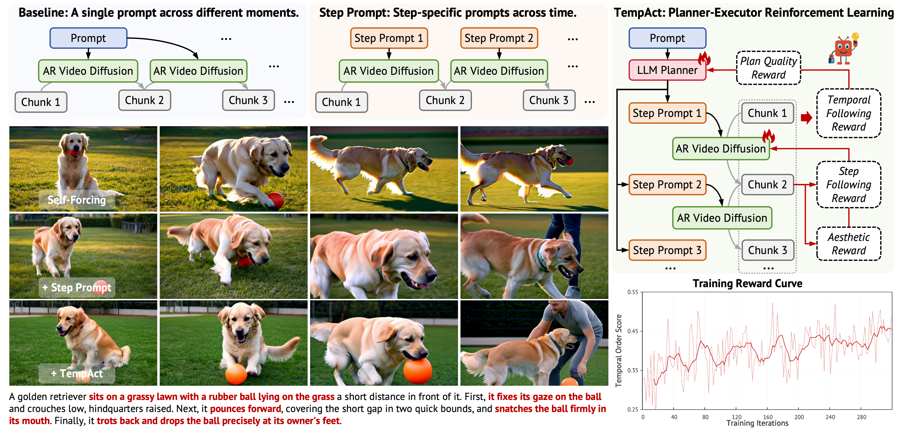
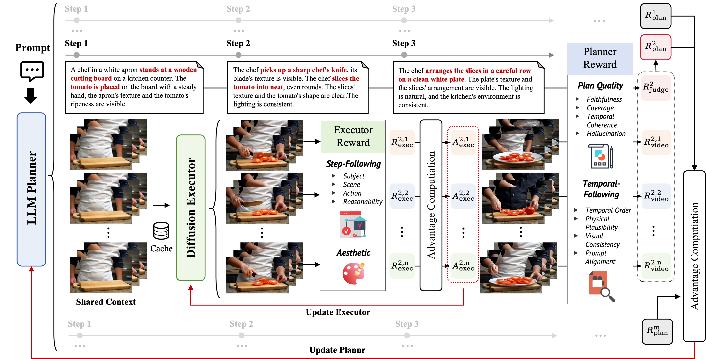

Figure 1. Overview and Motivation of TempAct. Framework: Single-prompt AR generation conditions every chunk on the same global instruction, while step-prompt generation provides explicit stage-wise conditions but still relies on a fixed executor. TempAct introduces a planner–executor RL framework that jointly optimizes temporal decomposition and prompt-transition execution. Qualitative comparison: Compared with single-prompt and step-prompt baselines, TempAct produces more faithful event progression under temporally complex instructions. Training dynamics: The increasing reward curve shows that hierarchical planner–executor optimization provides effective learning signals for temporal plausibility.
Abstract
Autoregressive (AR) video diffusion models enable low-latency streaming generation by synthesizing videos chunk by chunk with cached visual context, but this chunk-wise formulation makes temporal instruction following ambiguous. A single global prompt does not specify which sub-event should be realized in each chunk, while naively switching to step-wise prompts often leads to delayed reactions, blended step semantics, and error propagation across prompt transitions. These failures are difficult to address with supervised fine-tuning or distillation alone: SFT suffers from exposure bias, while rollout-based distillation still optimizes low-level denoising or teacher-distribution matching rather than directly enforcing action ordering and prompt-transition correctness.
We address these challenges with TempAct, a planner--executor reinforcement learning framework that jointly optimizes temporal decomposition and step-conditioned execution for temporally plausible AR video generation. TempAct uses an LLM planner to explore span-aware step prompts that are executable by the video model, and trains an AR diffusion executor to follow these prompts under its own generated histories. Its key mechanism is hierarchical group exploration: candidate plans form planning groups, and each plan induces an execution group of multiple continuations from a shared visual context, enabling plan-level credit assignment for long-horizon temporal outcomes and executor-level credit assignment for prompt-switch behavior. We further design hierarchical rewards that combine plan-quality and full-video temporal feedback for the planner with local transition-level step-following rewards, aesthetic regularization, and KL constraints for the executor. Experiments on Self-Forcing and LongLive show that TempAct improves temporal consistency while preserving overall visual quality.
Motivation
Existing AR video generators face two fundamental failures when executing temporally complex instructions:
Temporal Confusion (Single Prompt)
The model knows the full instruction but not which part should be realized now. Actions from later stages bleed into early chunks — a dog holding the ball while still sitting.
Prompt-Switch Failures (Step Prompts)
Step-wise prompts clarify the current stage but expose delayed reactions, blended semantics, and error propagation across chunks when the prompt transitions.
These failures are difficult to address with supervised fine-tuning or distillation alone: SFT suffers from exposure bias, while rollout-based distillation still optimizes low-level denoising or teacher-distribution matching rather than directly enforcing action ordering and prompt-transition correctness. This motivates reinforcement learning as a direct solution.
Method: TempAct
TempAct treats temporal video generation as a coupled decision-making problem: an LLM planner decomposes global instructions into span-aware steps, and an AR diffusion executor realizes these steps under accumulated visual context. Crucially, the LLM is not a fixed preprocessing module — both components are jointly optimized from generated trajectories.

Figure 2. TempAct Pipeline. An LLM planner samples span-aware temporal decompositions of a global instruction, while an autoregressive video executor rolls out shared contexts and multiple continuations under the corresponding step prompts. The nested planning–execution groups support hierarchical credit assignment.
Hierarchical Planner–Executor Pipeline
LLM-based Temporal Planning
The planner πφ samples M candidate temporal decompositions. Each plan assigns span-aware step prompts to latent-frame intervals, covering action ordering, temporal granularity, and state descriptions.
Prompt Smoothing
Each span uses a smoothed prompt s̃j = Smooth(sj, sj+1) that exposes the executor to both the current and upcoming subgoal, reducing abrupt semantic changes at transitions.
Hierarchical Autoregressive Sampling
For each plan, a shared visual context is generated up to the prompt-switch moment, then N continuations are sampled. This creates a nested group structure that isolates planning and execution quality.
Joint RL Optimization
The planner is updated with GSPO (sequence-level policy gradients) using plan-quality and full-video rewards. The executor is updated with Flow-GRPO on the first transition chunk only, with local step-following + aesthetic rewards.
Multi-level Reward Design
Plan Quality Score (Planner)
Qwen3-8B judges faithfulness to the original instruction, event coverage, temporal coherence, and hallucination avoidance across candidate decompositions.
Temporal-Following Score (Planner)
Qwen3-VL-8B evaluates full-video temporal order, physical consistency, and text-video alignment — averaged over all execution continuations per plan.
Local Step-Following Score (Executor)
VLM-based reward computed only on the first transition span, directly measuring prompt-switch execution rather than coarse full-video feedback.
Aesthetic Quality Score (Executor)
PickScore on the same transition chunk prevents semantic optimization from degrading visual quality during executor RL updates.
Experiments
We evaluate on a Temporal Order Benchmark with two subsets: Simple Set (100 prompts, 1–2 ordered steps) and Hard Set (100 prompts, 3–4 steps with complex dependencies). We report scores under both an in-domain judge (Qwen3-VL-8B) and an out-of-domain judge (Gemini-3-Flash) to test generalization.
Main Results
| Method | Temporal Order Score | VBench | PickScore | ||||||
|---|---|---|---|---|---|---|---|---|---|
| Simple Set (1–2 Steps) | Hard Set (3–4 Steps) | Avg. | Total | Quality | Semantic | ||||
| Qwen | Gemini | Qwen | Gemini | ||||||
| Single-prompt video generation | |||||||||
| Self-Forcing | 0.410 | 0.456 | 0.240 | 0.419 | 0.381 | 81.20 | 83.80 | 70.50 | 20.7 |
| Casual Forcing | 0.381 | 0.447 | 0.304 | 0.452 | 0.396 | 80.85 | 84.02 | 68.18 | 20.8 |
| LongLive | 0.428 | 0.505 | 0.302 | 0.463 | 0.424 | 80.36 | 82.72 | 70.91 | 21.1 |
| Step-prompt video generation | |||||||||
| Self-Forcing | 0.414 | 0.485 | 0.269 | 0.431 | 0.400 | 80.07 | 82.89 | 68.82 | 20.6 |
| + TempAct | 0.500 +20.8% | 0.538 +10.9% | 0.336 +24.9% | 0.473 +9.7% | 0.462 +15.5% | 79.99 | 82.71 | 69.14 | 20.6 |
| LongLive | 0.411 | 0.521 | 0.314 | 0.481 | 0.432 | 79.55 | 82.10 | 69.35 | 20.8 |
| + TempAct | 0.508 +23.6% | 0.579 +11.1% | 0.352 +12.1% | 0.512 +6.4% | 0.488 +13.0% | 79.97 | 82.61 | 69.40 | 20.8 |
Temporal Order scores are in [0,1]. Avg. averages the four Temporal Order scores across Simple/Hard sets and both judges.
Qualitative Comparison — Self-Forcing
Figure 3. Qualitative comparison on temporally ordered prompts using the Self-Forcing backbone. Single-prompt generation blends actions across chunks; step prompts improve stage clarity but still miss state transitions (e.g., squirrel leaving acorn on ground instead of burying it); TempAct correctly realizes the intended event progression.
Qualitative Comparison — LongLive
Figure 4. Qualitative comparison on temporally ordered prompts using the LongLive backbone. TempAct consistently produces videos with more faithful event ordering and cleaner prompt-switch execution than both single-prompt and step-prompt baselines.
BibTeX
If you find TempAct useful, please cite our work:
@inproceedings{wang2026tempact,
title = {TempAct: Advancing Temporal Plausibility in Autoregressive Video Generation
via Planner-Executor RL},
author = {Wang, Jing and Zhou, Xiangxin and Liang, Jiajun and Liu, Kaiqi
and Pang, Wanyuan and Xie, Zhenyu and Pang, Tianyu and Liang, Xiaodan},
journal = {arXiv preprint arXiv:2606.28016},
year = {2026}
}